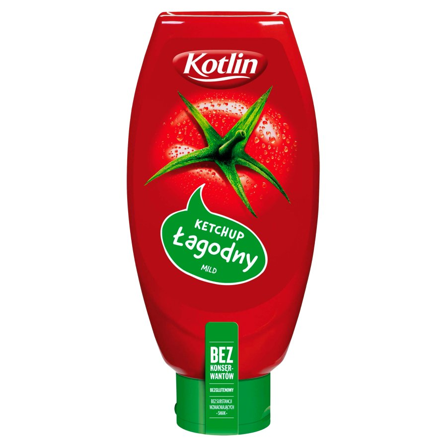

Everywhere
Frontend - Backend - Android
Agenda
- What is Kotlin?
- Why use it?
- Where things go wrong
- Tooling
- Example
Disclaimer
What is Kotlin?
Buzzwords
- Statically typed.
- Encourages functional programming style.
- Null-safety.
- Two-way compatible with Java.
- Extension methods.
- Compilation targets: JVM, JS, Android, machine code
- Developed by JetBrains.
Hello, World!
class Main {
public static void main(String args[]) {
System.out.println("Hello, World!");
}
}
fun main(args: Array) {
println("Hello, World!")
} Functional
println ((1 until 100).take(20).map { when {
it % 3 == 0 && it % 5 == 0 -> "fizzbuzz"
it % 3 == 0 -> "fizz"
it % 5 == 0 -> "buzz"
else -> it.toString()
}})Null-safety and immutability
I call it my billion-dollar mistake. It was the invention of the null reference in 1965.Tony Hoare, of quicksort fame
[...]
I couldn't resist the temptation to put in a null reference, simply because it was so easy to implement.
Null-safety and immutability
val notNullableImmutable: String = "Hello, World!"
var nullableMutable: String? = null
lateinit var nonNullableMutable: String
val unsafeMessage: String? =
nullableMutable?.replace("World", "WebDevs")
// => null
nullableMutable = notNullableMutable
val safeMessage: String =
nullableMutable!!.replace("World", "WebDevs")
// => "Hello, WebDevs!"
Data classes
class Person {
private String name;
public String getName() { return name; }
public void setName(String name) { this.name = name; }
@Override public boolean equals(Object o) {
return o instanceof Person
&& name.equals(((Person) o).getName());
}
@Override public int hashCode() { return name.hashCode(); }
}
data class Person(val name: String)Why use it?
Huge Ecosystem
- Full access to the JVM ecosystem.
- Full access to the JS ecosystem.
- Primary (and best-supported) language for Android.
- Growing family of Kotlin-specialized libraries.
Productive coding
- Type safety.
- Null safety.
- Intuitive API.
- Concise and expressive syntax.
...also
- Excellent for implementing DSLs.
It's fun!
fun foobar() {
println("Get it? The keyword for declaring functions is 'fun'.")
}Tooling

Where things go wrong
Gradle
- Groovy-based.
- Extremely powerful tool.
- ...to shoot yourself in the foot.
Gradle
- Tricky to combine Android project with others.
- IDE can build what CLI can't.
- CLI can build what Gradle can't.
JS target
- Partial type erasure.
- In-browser debugging capabilities limited.
- Interesting bugs and corner cases.
val people = JSON.parse(JSON.stringify(it.people)) as Array<Person>JS target
- Familiarity with builtin JS types required.
- Risks of `dynamic` values.
In practice
API
Try it
Conclusion
- Great promise.
- Just not perfect yet for all targets.
- Give it some time.
Resources
- https://kotlinlang.org/docs/tutorials/javascript/kotlin-to-javascript/kotlin-to-javascript.html
- https://kotlinlang.org/docs/tutorials/kotlin-android.html
- https://kotlinlang.org/docs/tutorials/koans.html
- https://github.com/howard/full-stack-kotlin-demo